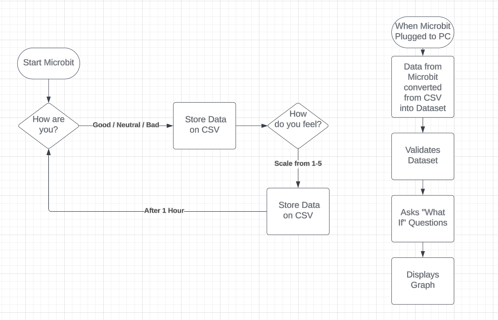
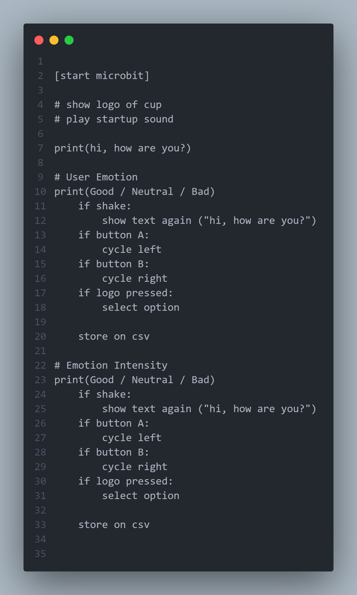

Plan And Design
Flowchart
Overview
The microbit is used to gather how the user is feeling, and how intensely they feel that emotion.
It will do this by asking the user two questions periodically every hour, storing the data in a CSV file.
First, it will ask how they are currenlty feeling.
The user uses buttons A and B to select their emotion, pressing the microbit logo to choose it. The user chooses between 3 emotions; "happy", "neutral", "sad".
After, it will ask how intense that emotions is.
By using buttons A and B again, they choose from a range between 1-5, pressing the microbit logo to choose it.
From the data gathered, it will then log and store them in a CSV file.
This CSV file will then be sent to the computer, and can be graphed to find their general emotional state/general mood level.
A python file will be used to graph this data.
The y-axis will be the mood level, and the x-axis will be time that emotions was inputted.
*NOTE: The microbit will notify the user periodically every hour.
If the user is happy, the y-axis value will be positive. The higher the number, the more happy they feel
If the user is sad, the y-axis value will be negative. The lower the number, the more sad they feel.
If the user is neutral, the y-axis will be at 0.
The general mood level can then be calculated by finding the of the emotions felt throughout the day.
Technologies Used
Software
Hardware
Pseudocode
This is the first pseudocode I created. This contains only the bare neccesities needed for the microbit to function.
